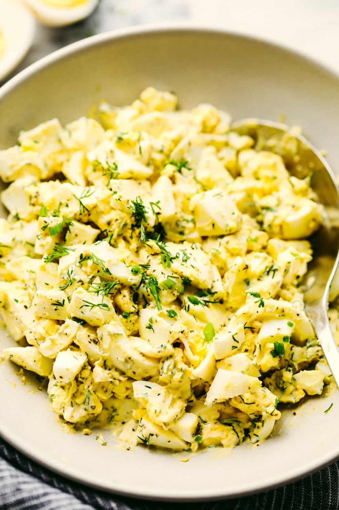

Egg Salad

Description
The Best Egg Salad is made with simple ingredients and is so creamy delicious! So easy to put together with the best flavor and it makes the perfect sandwich! You will make this recipe again and again!
Ingredients
- 8 eggs
- ½ cup mayonnaise
- 1 teaspoon prepared yellow mustard
- ¼ cup chopped green onion
- 1 teaspoon prepared yellow mustard
- salt and pepper to taste
- ¼ teaspoon paprika
Instructions
- Place egg in a saucepan and cover with cold water. Bring water to a boil and immediately remove from heat. Cover and let eggs stand in hot water for 10 to 12 minutes. Remove from hot water, cool, peel and chop.
- Place the chopped eggs in a bowl, and stir in the mayonnaise, mustard and green onion. Season with salt, pepper and paprika. Stir and serve on your favorite bread or crackers.